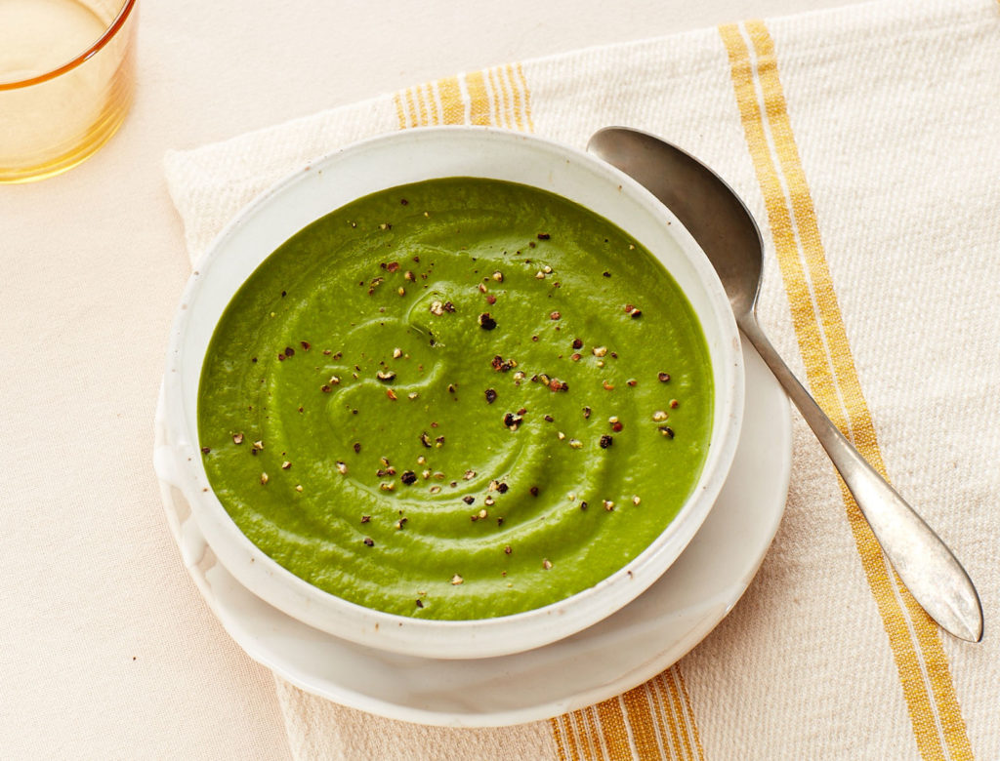

Green Soup

Green soup
This recipe comes from Vikingars Gästabud (The Viking Feast), and is for four
servings.
Ingredients list:
- 3-1/2 to 5 oz. of fresh, parboiled spinach, or about 8 oz. of frozen whole spinach
- 10 cm of the white part of a leek
- 1 quart good bouillon (chopped finely cup 2)
- Dash of pepper
- Dash of ground ginger
- 2 to 3 egg yolks
- 1/2 cup cream
- Grated nutmeg
Steps:
- Clean and rinse the fresh spinach or thaw the frozen
- Rinse the leek and slice thinly
- Bring the bouillon to a boil and add the spinach and leek. Let it boil for 5 minutes
- Add the parsley and boil together a few more minutes
- Season with salt, pepper, and ginger
- Whisk the yolks with the cream in the bottom of a soup tureen
- Pour in the soup while
whisking briskly. Grate some nutmeg over the soup and serve it with a good bread.
Home